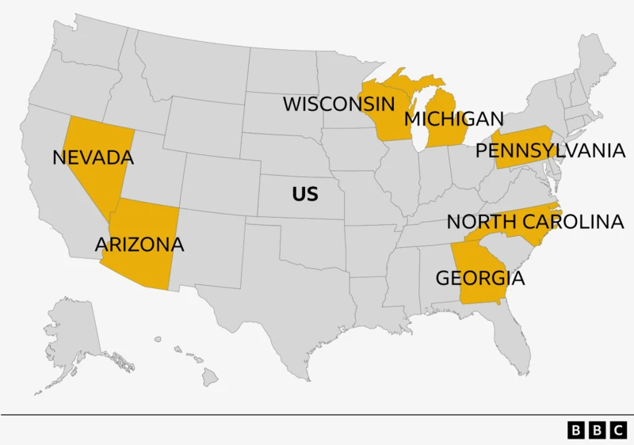

Education has emerged as one of the most significant predictors of voting behavior in the United States. In recent years, particularly since the rise of Donald Trump, the divide between college-educated and non-college-educated voters has widened, shaping the political landscape in profound ways.
The Role of Education in Voting Behavior
College-Educated Voters
Non-College-Educated Voters
Accelerated Divide
Donald Trump’s presidency accelerated this educational divide. His campaign strategies targeted non-college-educated voters by addressing their economic anxieties, opposition to political elites, and concerns over immigration and globalization. Meanwhile, college-educated voters increasingly aligned with Democratic values, rejecting Trump’s rhetoric on social issues and embracing progressive causes.
Education in Swingstates
Swing states hold a critical role in determining the outcome of elections, and their unique balance of college-educated and non-college-educated voters makes them highly contested battlegrounds. States like Pennsylvania, Michigan, and Wisconsin often exhibit near-equal splits between these two demographic groups, creating an intense focus from both parties. The balance in these states means that appealing to just one of these groups can significantly shift the outcome of an election. Political campaigns invest heavily in swing states, tailoring messages that resonate with both college-educated voters, who tend to favor progressive policies, and non-college-educated voters, who are often drawn to messages emphasizing economic security and traditional values. This dynamic makes swing states pivotal in shaping the direction of national elections.
